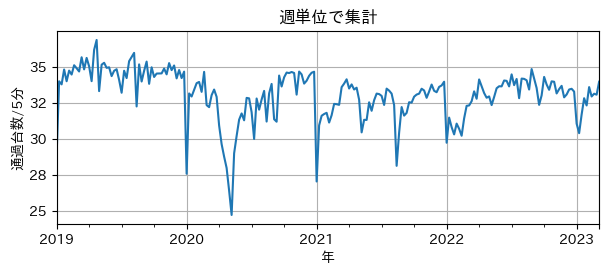
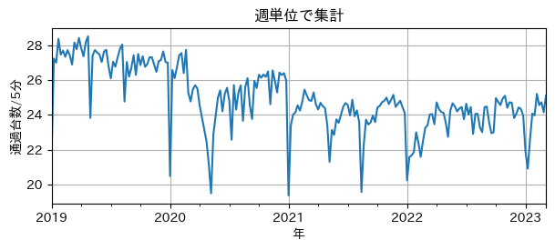
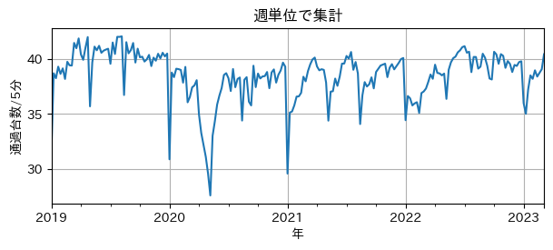
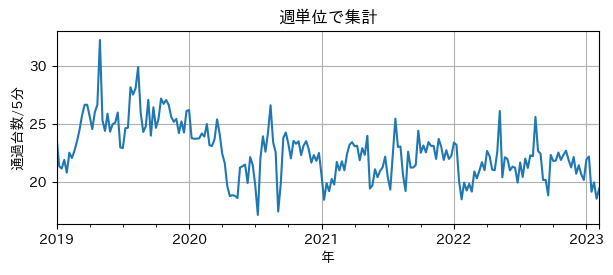
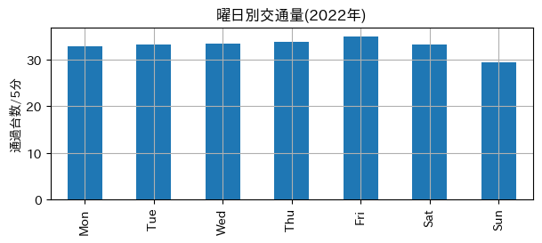
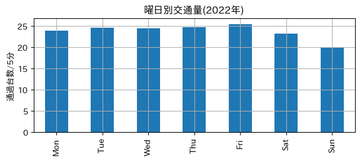
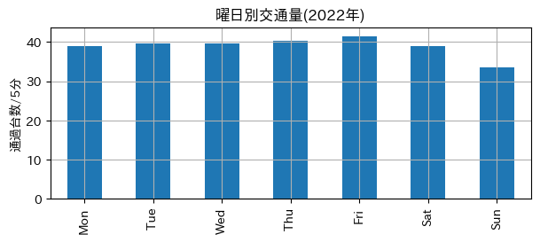
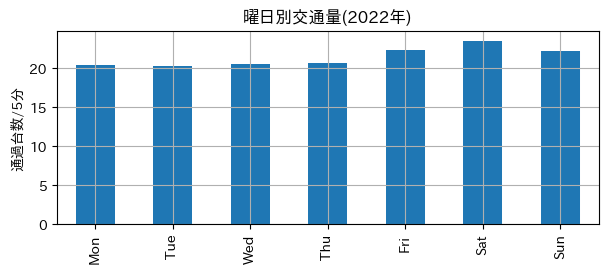

KBS 熊本フィールド 2023
地域課題解決に向けた取り組みの一環として、交通オープンデータを用いて交通量分析を行いました。
平日の交通量の分析
2022年の全ての平日の平均交通量の一日24時間の推移のグラフを、地図上の計測地点にプロットしました。
リンクをクリックして表示してください。
- 合志市周辺の交通量分析
- 合志市の交通量分析
- 熊本市の交通量分析 (3.5MB)
- 上天草市の交通量分析
- (参考) 合志市周辺の渋滞度
- 交通量とは、各計測地点での5分当たりの通過車両数です。
- 熊本市のデータは、3.5MBと大きいので、有線や無線LANの接続環境での閲覧をおすすめします。
- 合志市周辺とは合志市全域に加えて、就業・就学に関連する熊本市北部、就業や物流に関連するセミコンテクノパーク周辺地域、熊本空港の北側地域などを含めました。
具体的には、以下の緯度、経度で囲まれる地域としました。
- 32.836216 < 緯度 < 32.923801
- 130.698463 < 経度 < 130.875034
過去4年間の交通量の推移
2019年1月から2023年2月までの交通量の推移をグラフにしました。
- 合志市周辺の交通量の推移

- 合志市の交通量の推移

- 熊本市の交通量の推移

- 上天草市の交通量の推移

2022年の曜日別交通量
2022年の交通量を曜日別に集計しました。
- 合志市周辺の曜日別交通量

- 合志市の曜日別交通量

- 熊本市の曜日別交通量

- 上天草市の曜日別交通量

補足説明
- 各計測地点では、「断面交通量情報」として5分当たりの通過車両数が提供されています。
- 各計測地点での車速や車種の情報は提供されていません。
- 熊本県全域 交通量計測地点一覧 を地図上にプロットしました。
- 😢人吉市には計測地点がありません😭
情報源
次の情報源を使ってデータ処理を行いました。